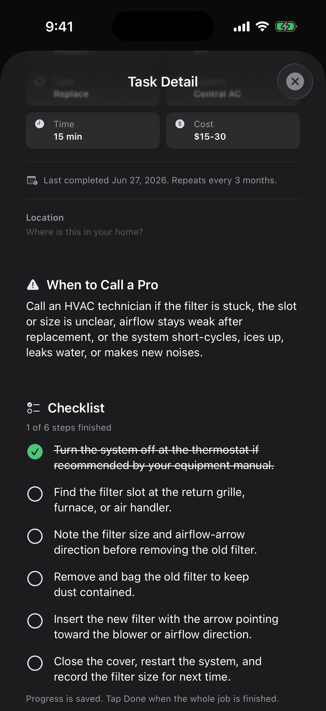
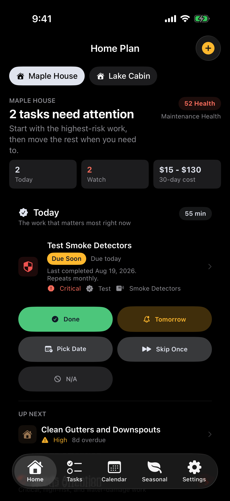
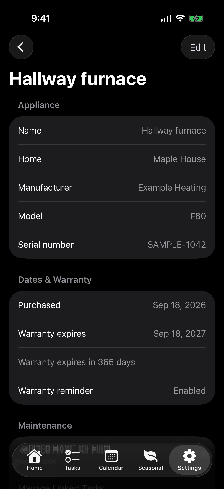

CHECKLISTS
Pick up where you left off.
Tick off individual steps, leave a job partly finished, and return to your saved progress. A new maintenance cycle starts fresh.

HOME MAINTENANCE · IPHONE & IPAD
Know what needs doing. Remember what you’ve done. HomeKeep brings your maintenance, reminders, and appliance records together.
One purchase. No subscription.

See what needs attention and what can wait.
Keep recurring tasks and reminders on track.
Save notes, completion history, and appliance details.
Tick off individual steps, leave a job partly finished, and return to your saved progress. A new maintenance cycle starts fresh.

Keep model and serial numbers, manual links, purchase dates, warranty reminders, and related maintenance together.

Actual HomeKeep screens in dark mode. Example home and appliance details.
START SMALL
Useful homeowner guides you can read, check off, and print. Free, with no signup.
Explore all free resourcesNo. HomeKeep is a paid app with a one-time purchase and no subscription. See the App Store for the current price in your region.
HomeKeep is for iPhone and iPad homeowners who want recurring reminders, saved checklist progress, and appliance records together. Start a routine for your first home, or keep a record of the work you already do.
Yes. Everyday planning and your saved home records work offline, with no account required. Opening online manuals or other external links needs an internet connection. Export a backup to keep a separate copy of your records.
Create custom maintenance tasks, keep completion history and notes, and manage multiple properties. Home screen widgets show your plan at a glance, and backup export keeps a separate copy of your records.
HomeKeep currently does not include iCloud sync or shared household task assignments. Consider those needs before buying.
Yes. The first-year and fall checklists, appliance worksheet, and professional welcome kit are free to use and print. No signup or app purchase is required.
HomeKeep for iPhone and iPad. One purchase, no subscription.